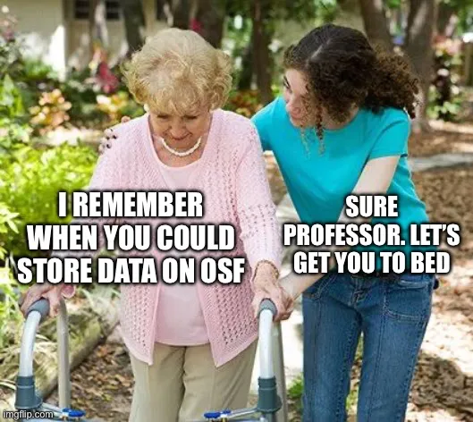
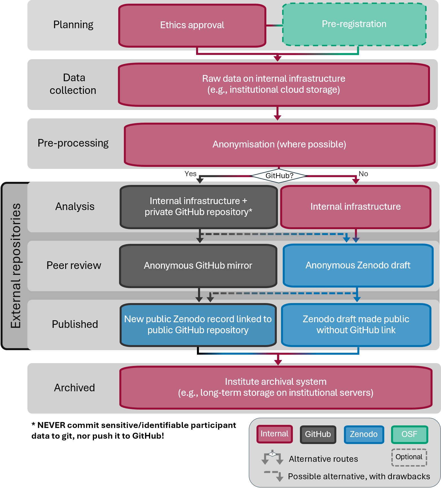

![]()

Tiptl;dr
OSF Projects are being phased out in early 2027, and with them the easily anonymised view-only links for peer review. This post walks through my current replacement workflow: anonymising the project locally, sharing code and data with reviewers via an Anonymous GitHub mirror, and publishing on Zenodo after acceptance (via a GitHub release). It also covers some GDPR caveats: why only fully anonymised data should go on Zenodo (which is hosted outside the EU), and what that means for the wording in our participant consent forms.
Click here to skip all the fluff and get straight to the workflow description.
Updates:
2026-29-10: added links to relevant discussions (Burke, 2026; Lakens, 2026)
Why this post
The Center for Open Science is phasing out OSF Projects: no new projects can be created after November 16 2026, and all existing projects become read-only on February 19 2027 (COS announcement). Thankfully, pre-registrations and pre-prints stay, but OSF’s anonymised view-only links for reviewers vanish along with the projects. The announcement has prompted discussion about where researchers should move their data and materials (e.g., Lakens, 2026; Burke, 2026). While there are alternative repositories for sharing research data, currently none of them has as seamless a process as the OSF for sharing anonymised reviewer links. Several colleagues have mentioned this as a particular sticking point: how do we share materials anonymously with reviewers moving forward?
I recently shared the code, data and rendered output of an analysis report (a Quarto book documenting my entire analysis workflow, with each chapter a separate Quarto document) with anonymous reviewers. Since we don’t know whether our paper will be accepted by February, I didn’t want to rely on setting up an OSF Project that might be read-only during the review process and need to be moved elsewhere. I took the opportunity to try out two replacements for sharing materials during double-blind review (once the paper is accepted, I’ll add the links to my anonymised repos):
- Anonymous GitHub mirror (anonymous.4open.science): an anonymised mirror of a GitHub repo
- A Zenodo draft shared via a secret link
Importantly, these options are for the anonymous review phase only. For long-term public archiving, GitHub isn’t a viable option: it’s proprietary (owned by Microsoft), and it’s designed for software development, not for preserving research data. As such, it doesn’t provide a persistent identifier (PID) such as a DOI. I’d therefore recommend using a private GitHub repository during the active analysis phase, and archiving your materials in a repository designed for scholarly dissemination that issues a PID, such as Zenodo. As I’ll discuss below, GitHub integrates nicely with Zenodo, so you can use both and get the benefits of each.
Full disclosure: this is the first time I’ve submitted a manuscript without an OSF repository, so I haven’t yet reached the “publish a GitHub release to Zenodo” stage. Hopefully the paper gets accepted soon and I can update this post :)
ImportantCaveat for EU-based researchers: Zenodo and the GDPR
As a researcher and research data manager at an EU-based research institute (not to mention a member of the internal ethics committee), I must handle/advise my institute members to handle personal data in line with the General Data Protection Regulation GDPR. Under the GDPR, personal data can only leave the EU/EEA if the destination offers adequate protection, and many institutions (mine included) go a step further and require storage on EU servers.
Zenodo’s servers are hosted by the European Organisation for Nuclear Research/Partical Physics, commonly known as CERN, in Switzerland, which is not in the EU. At first glance, that seems fine: Switzerland has had an EU adequacy decision since 2000, reconfirmed in 2024, meaning personal data can flow there without additional safeguards.
But Zenodo isn’t hosted by Switzerland, it’s hosted by CERN. As an intergovernmental organisation, CERN has its own privileges and immunities under international law, and processes personal data under its own internal rules (Operational Circular 11), which it describes as comparable to the GDPR. Comparable is not the same as equal, though. According to Zenodo’s own FAQ, CERN:
- is not subject to the GDPR
- has no adequacy decision under Article 45 GDPR
- does not enter into Standard Contractual Clauses or other transfer instruments under Article 46 GDPR
That leaves only the derogations in Article 49 GDPR, such as the explicit consent of participants. CERN leaves that assessment to the uploading institute, which remains responsible for having a valid legal basis for the transfer and informing participants.
The same caution applies to GitHub, of course, but many EU-based researchers seem to be turning to Zenodo as a GDPR-compliant alternative to OSF. As we’ve seen, that’s not quite accurate: CERN’s data protection rules are (currently) comparable to the GDPR, but CERN itself falls outside the GDPR’s jurisdiction. GitHub, on the other hand, isn’t usually seen as a home for research data in the first place, hence this lengthy info box focusing on Zenodo.
What this means for EU-based researchers
- Article 49 derogations are meant for exceptional cases and are interpreted narrowly, so they’re not a sound basis for routinely uploading participant data. If you did want to rely on consent, it would have to be explicit consent to this specific transfer, planned from the consent form onwards, not added afterwards.
- Pseudonymised data is still personal data under the GDPR, so replacing names with participant IDs doesn’t solve this.
- Fully anonymised data falls outside the GDPR, so it can go on Zenodo without these concerns. Watch out for indirect identifiers, though (age, L1, place of birth, voice recordings, free text responses), especially with small or specific samples.
- Your own name and affiliation in the Zenodo metadata are personal data too. That’s fine, since you’re consenting to publishing them yourself, but it shows that “no personal data on Zenodo” really means “no participant data”.
- If in doubt, ask your data protection officer. Your institution’s policy may be stricter than the GDPR itself.
In short: Zenodo is a great home for anonymised data, code and materials. Personally identifiable participant data stays on institutional (EU) storage.
Background and my personal reaction: why is OSF changing?
Since opening to the public in 2012, OSF has been a general-purpose project space, hosting preregistrations, pre-prints, and project repositories. In his note to users, co-founder Brian Nosek explained that this flexibility became costly: maintaining so many use cases, plus fighting a constant flood of spam, left too little funding to improve the platform. Part of the problem was private storage. Around 63% of OSF projects (over 650,000) have never been made public, and almost 200,000 users have used OSF purely as free private storage. That doesn’t serve the mission of open science, but still costs money to maintain.
Reading this, I looked at my own OSF account and realised I was guilty too (et tu, Brute?): I had dormant private projects I barely remembered. Not research projects with data in them, but materials for ideas that never went anywhere. A drop in the bucket, but clearly the bucket was overflowing.
Still, I was rather shocked by the announcement. OSF has been a field-spanning mainstay across the research life cycle for years, and an integral part of my own research workflow. I read all the related announcements and posts from COS, and sent a (long-winded) email to my institute’s members in my capacity as research data manager, suggesting alternatives while trying not to let my own internal moral panic show. I scoured places like Reddit and Bluesky for reactions, but found surprisingly little (I even trudged back to the platform formerly known as Twitter, which admittedly hasn’t been the place for open science moral panic since you-know-what). There were a few posts from people who also expressed feeling unmoored by the announcement, but the replies conveyed a more pragmatic reaction that was reassuring (e.g., posts on ResearchGate, Reddit, and Figure 1 on Bluesky). Maybe I was overreacting? Talking to colleagues, it didn’t seem so. Either way, it felt like a bad sign.
I was struck by how fragile the funding behind it was. COS is a charity that relies mostly on philanthropic funding and institutional memberships, and its applications for US federal infrastructure funding (NSF) were unsuccessful. If a platform this widely used can’t secure stable funding, that should be a warning to all of us: open science infrastructure doesn’t maintain itself.
As a Canadian living in Europe, I don’t see much risk to open science in my own work or local infrastructure, though as this whole topic shows, US decisions reach us anyway (and I shouldn’t be too confident, American researchers probably also weren’t very worried 10 years ago). Even if the response is to build and use more EU or non-US infrastructure, science is cumulative and community-driven, and as a whole it’s affected by what happens in the States. We all depend on the tools we share.
That said, I’ll keep using OSF for pre-registrations (and for pre-prints, once I finally post one). It’s been a couple of months since OSF Projects were announced to be phased out, and I’ve moved on from moral panic to figuring out a new workflow with new tools. So, on a more optimistic note: here’s what we can do about it!
Workflow: sharing an anonymous repository
Here’s my current workflow for sharing an anonymised repository with reviewers. It has three stages:
- During development: a private GitHub repo for code and analyses
- During review: an anonymised mirror of that repo, shared with reviewers via Anonymous GitHub
- After acceptance: the GitHub repo made public, with a release archived on Zenodo for a citable snapshot and DOI
Note that this workflow leaves out two stages where OSF remains just as useful: preregistering a study during the planning phase, and posting a pre-print (which, since it reveals the authors anyway, makes anonymisation during the peer review process somewhat moot). I want to stress that both remain highly valuable services from COS, and pillars of open science!
Figure 2 summarises the whole workflow, from planning to archiving. Identifiable data stays on internal infrastructure throughout, and external repositories only come into play after pre-processing and anonymisation. GitHub users can push code and anonymised data to a private repository during analysis, share an Anonymous GitHub mirror during review, and publish a Zenodo record linked to the GitHub repository after acceptance. Without GitHub, everything stays internal until review, when a Zenodo draft is shared with reviewers and then made public once the paper is accepted. The dashed arrows show possible alternatives with drawbacks: for example, moving from a Zenodo draft to a GitHub-linked record creates a second Zenodo record with a separate DOI.

I haven’t included pre-prints in the workflow, since they’re not part of my recommendation (though it’s not like I recommend against them!). If you’d like to post one, it would fit between analysis and peer review. Keep in mind that a pre-print reveals the authors, which makes anonymising your materials for double-blind review somewhat moot, so check your journal’s pre-print policy first. OSF pre-prints (e.g. PsyArXiv) remains available, and for linguists, LingBuzz is another common option.
My original draft of Figure 2 didn’t include the pre-processing stage, which makes explicit that anonymisation has to happen before anything enters an external repository. On reflection, it felt too important to leave implicit. So before we finally get to the workflow itself, the next section covers a few key points on anonymisation and data sharing.
Before you start: the golden rule
Never push identifiable or personal data to GitHub, not even to a private repo. Only fully anonymised data should leave your institution’s storage.
When is data anonymised? Data is anonymised when no one can identify the people in it, using any means reasonably likely to be used, taking into account cost, time and available technology (GDPR Recital 26). In practice, this means:
- No key exists linking participant IDs back to people, anywhere
- No combination of variables can single someone out. Indirect identifiers like age, L1, place of birth or rare language combinations can identify a person even without a name, especially in small samples
- No inherently identifying data remains, such as voice recordings, videos, faces or free text responses
Pseudonymised data (names replaced with IDs, with a key stored elsewhere) still counts as personal data under the GDPR, so it stays on institutional storage.
NoteHow anonymous is it, really?
To see how quickly a few harmless-looking variables add up, try the Observatory of Anonymity. Enter a few demographics (e.g. birth date, gender, location) and it estimates how likely you are to be uniquely identified, based on census data from 89 countries (though not Germany, where I live). Everything runs in your browser, so nothing you enter is stored. The underlying study (Rocher et al., 2019) found that 99.98% of Americans could be correctly re-identified in an “anonymised” dataset using just 15 demographic attributes.
Now, on to the point of this post: sharing an anonymous repository with reviewers in the double-blind peer review process!
1. During development
Set up a private GitHub repo
Do this however you like. Some options: directly in GitHub, or from an existing Rproject in RStudio:
library(usethis)
use_github(private = TRUE)Keep data and build output out of the repo with a .gitignore. I always keep raw, identifiable data in its own unique folder. This way, I can very easily exclude everything in this folder from being track by git by adding it to the .gitignore file:
data/raw/*Remember that anything you commit stays in your Git history, and anything you push stays in GitHub’s history, even after you delete the file. Removing it properly means rewriting the history (e.g. with git filter-repo) and, for pushed files, possibly contacting GitHub support to clear cached copies. Much easier to never commit it in the first place.
WarningCopilot and your “private” repos
As of April 24 2026, GitHub uses Copilot interaction data (prompts, code snippets and context) from Free, Pro and Pro+ users to train its AI models, unless you opt out. GitHub says it doesn’t use private repository content “at rest”, but anything sent to Copilot while you work in a private repo, such as code or data snippets, can be collected.
To opt out, go to github.com/settings/copilot/features and disable Allow GitHub to use my data for AI model training.
This is one more reason to keep personal data out of GitHub entirely, and the same caution applies to any AI coding assistant in your editor: whatever it reads as context leaves your computer.
2. During review
Steps to set-up your repository for review: anonymise documents (wipe names, institutes) and choose an anonymous repository host.
2.1 Anonymise the project
I use RStudio’s Find in Files (Ctrl+Shift+F / Cmd+Shift+F) with Replace All, swapping each identifier for a unique placeholder:
- your name →
ANON_AUTHOR - email →
ANON_EMAIL - also check initials, ORCID, GitHub username, institution and file paths like
/Users/yourname/...
Unique placeholders make de-anonymising a simple reverse Replace All later.
Tip
If your README documents this process, write the placeholders there with hyphens (ANON-AUTHOR) instead of underscores. Otherwise the de-anonymising Replace All will also overwrite your instructions.
Then re-render the PDF only, without touching the HTML:
quarto render --to pdfCheck the PDF and any other binary files (Word, images, .RData, rendered HTML) by hand. Find in Files can’t search inside them, and neither can Anonymous GitHub.
Commit and push.
NoteDo I need this step?
If you only plan to use the Anonymous GitHub mirror, this step isn’t strictly necessary, since the website can replace names and other strings for you. However, it only works on text files. Binary files such as PDFs, Word documents, images and .RData files aren’t scrubbed, so a rendered PDF would still show your name.
Anonymising locally and re-rendering fixes this, and it’s needed anyway if you also share a Zenodo draft. Doing both is the safest option.
2.2a Option 1: Create the Anonymous GitHub mirror
- Make sure your GitHub repo is private for the review period, so reviewers can’t find it by searching for a distinctive title or code snippet.
- Log in at anonymous.4open.science with GitHub and select the repo.
- Add terms to hide. Regex works, which saves listing every variant, e.g. to anonymise all mention of my name or the name of my institute (ZAS):
[Dd]aniela ?[Pp]alleschi
\bZAS\b- Optionally set an expiry date that covers the review period.
- Open the resulting link in a private window (e.g., in incognito mode) and check everything.
Snags I hit:
- Blank plots in the PDF viewer. Some geom layers didn’t show up in Anonymous GitHub’s PDF preview. Rasterising the figures for the PDF output fixed it:
format:
pdf:
fig-format: png
fig-dpi: 300- GitHub Pages. The tool can serve an anonymised Pages site, but on a free GitHub plan Pages needs a public repo, and the Pages site itself is always public. For a private repo, I’d skip Pages and let reviewers use the file browser and PDF.
- Stale settings. If the tool shows confusing errors about branches, a full refresh or re-pasting the repo URL clears its cached state.
Keep in mind: it’s a free academic tool, not an audited service, and it only hides what you tell it to. Fine for code and anonymised data, not for anything sensitive.
2.3 Link it in the paper
Add the link to your paper (example LaTeX syntax with an anonymous.4open.science URL):
All data and code are available in an \href{https://anonymous.4open.science/r/your-repo-id}{anonymised repository}.3. After acceptance
After your manuscript is accepted (yay!), you de-anonymise the documents (adding names/institutes back in), and share in a public repository.
3.1 De-anonymise the project
- Use Find in Files to search for
ANON_AUTHOR(and other placeholders), and Replace All with the original text. - Re-render the PDF, then commit and push.
Wrap-up
Though this process is more effort than ticking “anonymise” on an OSF view-only link, most of the work (placeholders, README instructions, .gitignore) only needs setting up once per project.
I personally use GitHub a lot, but I’m more hesitant to push research data there, and have gladly used an institutional GitLab instance for this in the past (shout out to the HU Berlin; if you have a HU account check it out: https://scm.cms.hu-berlin.de/). Zenodo’s GitHub integration is fairly seamless, but it lacks the simplicity of OSF’s one-click anonymisation. Then again, uploading and organising files on OSF was a pain. Zenodo has no folder structure at all: you simply upload single files or zipped folders. That keeps uploading simple, but means files inside a zip can’t be opened in the browser, they’re only listed. You win some, you lose some.
With OSF stepping back as a repository, I hope Zenodo will make anonymised sharing for review easier, making this whole post obsolete. To that end, I’ve opened a feature request on Zenodo’s GitHub for anonymised review links and better GitHub integration. If this affects you too, a 👍 on the issue helps show there’s demand. Until then, we work with what we’ve got.
Honourable mentions
An honourable mention goes to Codeberg and GitLab, open source alternatives to GitHub (which is proprietary and owned by Microsoft). Just note that both Anonymous GitHub and Zenodo’s automatic archiving only work with GitHub, so with these you’d upload snapshots to Zenodo manually.
A few other repositories worth knowing about, which I’m aware of but haven’t used myself (COS itself points to Dataverse, Dryad and Figshare as alternatives):
- Dataverse installations can offer anonymised private URLs for double-blind review (since version 5.6), which hide the depositor’s identifying metadata. Whether this is switched on depends on the installation. For linguists, TROLLing (the Tromsø Repository of Language and Linguistics, part of DataverseNO) is a good option, and as Norway is in the EEA, the GDPR applies.
- Dryad has a dedicated “Private for Peer Review” mode with a randomised, de-identified reviewer link. Note that it charges data publishing fees unless your institution or journal covers them.
- Figshare offers private links for peer review, but it’s a commercial platform.
- CLARIN centres are specialised repositories for language resources, with EU-based infrastructure. They’re more suited to long-term archiving of corpora and recordings than to quick sharing for review.
Writing assistance
Claude Opus 5.5 (Anthropic) helped draft the workflow sections and edit the text. The opinions, experiences and final wording are my own, and all content was fact-checked by me. For example, I added the callout box “How anonymous is it, really?” to link to the Observatory of Anonymity, which I’d learned about in a research data management workshop. Claude pointed me to the underlying study by Rocher et al. (2019), and I then looked it up to verify the reporting was accurate.
References
Burke, M. C. (2026). A reflection on repositories. Zenodo. https://doi.org/10.5281/zenodo.22940977
Lakens, D. (2026). Which data repository should you use? https://daniellakens.blogspot.com/2026/08/which-data-repository-should-you-use.html.
Rocher, L., Hendrickx, J. M., & Montjoye, Y.-A. de. (2019). Estimating the success of re-identifications in incomplete datasets using generative models. Nature Communications, 10, 3069. https://doi.org/10.1038/s41467-019-10933-3
Citation
BibTeX citation:
@online{palleschi2026,
author = {Palleschi, Daniela},
title = {Life After the {OSF:} {Sharing} Code and Data for
Double-Blind Peer Review},
date = {2026-10-21},
url = {https://daniela-palleschi.github.io/blog/posts/zenodo/},
langid = {en}
}
For attribution, please cite this work as:
Palleschi, D. (2026, October 21). Life after the OSF: Sharing code
and data for double-blind peer review. https://daniela-palleschi.github.io/blog/posts/zenodo/